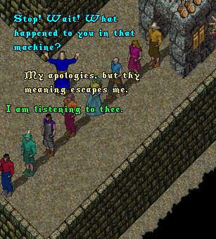
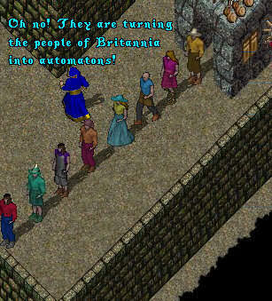
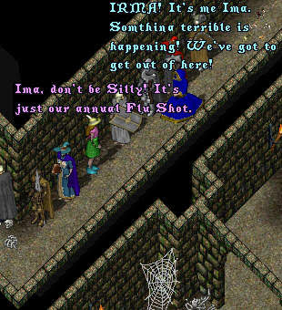
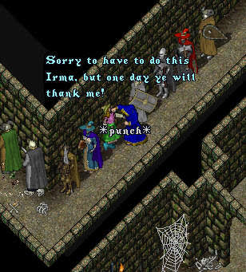
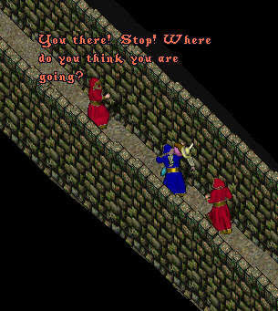
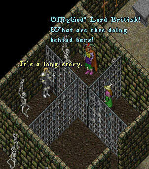

Episode 67: Desperately Seeking Irma (Part 3). In the last episode a cleverly disguised ImaNewbie had infiltrated the hideout of the GMs and Counsellors. Searching for Irma, he happened upon a strange machine. As this episode begins, ImaNewbie, unclear as to the machine's evil purpose, decides to ask the people emerging from the other side.


Shocked by his discovery, ImaNewbie rushes up the line
of seemingly hypnotised people, placidly waiting their turn
to enter the machine. Finally, he finds his beloved Irma.

Unable to convince Irma to follow him, ImaNewbie
resorts to drastic measures.

Throwing the unconscious Irma over his shoulder, ImaNewbie
makes a valiant attempt to escape but is spotted.

Grabbed by the GM's and stripped of his disguise, ImaNewbie
and Irma are thrust into prison cells and find they are in the
company of a most unexpected personage.
